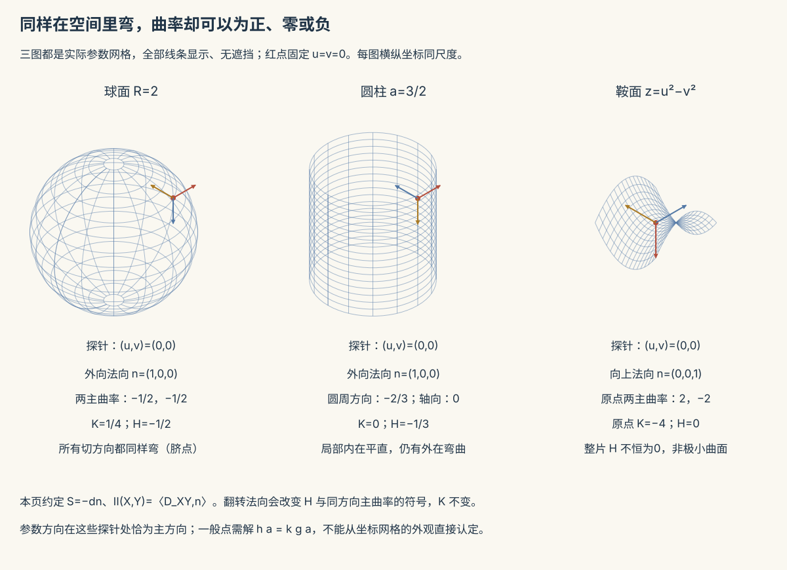

本页目录
微分几何 II · 曲面论与 Gauss 绝妙定理
曲面的几何由两个二次型掌管：第一基本形式记录曲面内部的长度与角度，第二基本形式记录嵌入空间中的弯曲。本页把两本账放在同一张桌上，最后读出 Gauss 的绝妙定理：高斯曲率看似用了法向和二阶导数，实际只由内在度量决定。
学习层：一张纸、一只罐子和一个鞍面，K=0 真的都一样吗？
1. 具体情境：工程师要判断一块薄壳能不能摊平
你拿到四个局部模型：桌面、半径为 \(2\) 的球壳、圆柱罐壁，以及 \(z=u^2-v^2\) 的鞍面。机器人只能在曲面上走，不能抬头看外部空间；它可以测曲线长度、夹角和小三角形的内角和，也可以在外部放一根法向探针。现在要回答两个工程问题：
- 只用机器人自己的尺子，哪些模型在局部可被区分？
- 若把法向探针翻过来，哪些读数只是符号变了，哪些几何事实没有变？
“看起来都弯了”不是答案。平面和圆柱在内在 \(K\) 上相同，但圆柱仍有非零外在平均曲率；球面两个主方向同号，鞍面两个主方向异号。实验把这四种情形并排记账。
2. 揭示前先预测：把答案写在曲线出现以前
先选一个模型、一个参数点和一个法向方向，再回答：
- 当前点的 \(K\) 是正、零还是负？
- 若 \(K=0\)，它是“两个主曲率都为零”的平面点，还是“恰有一个主曲率为零”的抛物点？
- \(k_1,k_2\) 应该同号、异号、恰一个为零，还是都为零？
- 把 \(n\) 换成 \(-n\) 后，\(K\) 与 \(H\) 各怎样变化？
点击揭示前，图和数值账本保持隐藏。有限参数点的答案可以核对公式，但不能把四个例子冒充成对任意曲面的证明。
3. 正式桥：两个二次型如何变成两个主曲率
取正则参数曲面 \(\mathbf r(u,v)\)，并选一个单位法向 \(n\)。切向基给出第一基本形式
因此 \(EG-F^2>0\)，它控制长度、角度和面积元 \(dA=\sqrt{EG-F^2}\,du\,dv\)。第二基本形式按本页约定为
法曲率是 Rayleigh 商 \(\kappa_n=II(w,w)/I(w,w)\)。等价地，形算子在切平面上由 \(I^{-1}II\) 表示；它的两个特征值就是主曲率 \(k_1,k_2\)。于是
这是实验的正式桥：先从 \(r_u,r_v,r_{ij}\) 算 \(I,II\)，再用特征值和迹/行列式同时核对 \(K,H\)。若 \(n\mapsto-n\)，\(II,k_1,k_2,H\) 全部变号，但 \(I,K\) 不变。
4. 动手揭示：内在 K 和外在 H 必须分成两列
下面的实验包含平面、球面、圆柱和鞍面，允许移动参数点并翻转法向。蓝色账是内在 \(K\)，红色账是依赖法向的外在 \(H\)；表格还会显示 \(E,F,G,L,M,N\) 和主曲率。先完成四项预测，才会显示图。
无 JavaScript 时的静态后备：
| 模型（正则点） | \(I\) 与 \(II\) 的代表值 | \(k_1,k_2\) | \(K\)（内在） | \(H\)（取所列法向） | 点型 |
|---|---|---|---|---|---|
| 平面 \(r=(u,v,0)\) | \(E=G=1,F=L=M=N=0\) | \(0,0\) | \(0\) | \(0\) | 平面点 |
| 球面 \(R=2\)，外向 \(n\) | \(E=4,F=0,G=4\cos^2u;\ L=-2,M=0,N=-2\cos^2u\) | \(-1/2,-1/2\) | \(1/4\) | \(-1/2\) | 椭圆点 |
| 圆柱 \(a=3/2\)，外向 \(n\) | \(E=a^2,F=0,G=1;\ L=-a,M=N=0\) | \(-2/3,0\) | \(0\) | \(-1/3\) | 抛物点 |
| 鞍面原点 \(z=u^2-v^2\) | \(E=G=1,F=0;\ L=2,M=0,N=-2\) | \(2,-2\) | \(-4\) | \(0\) | 双曲点 |
这里的“可展”不是每个 \(K=0\) 点的同义词：圆柱的正则片确实可展，但平面点与抛物点必须先按主曲率区分；单个点满足 \(K=0\) 也不能仅凭此推出整片曲面具有某种全局展开性质。
5. 定理边界：哪些话来自定理，哪些只是模型读数
- Gauss 绝妙定理：\(K\) 可由第一基本形式及其导数表达，所以等距变形保持 \(K\)。圆柱能卷自纸而不改变 \(K=0\)，正是“外在弯、内在平”的示范；但 \(H\) 仍会随法向记录外在弯曲。
- \(K\) 的点分类：\(K>0\) 是椭圆点，\(K<0\) 是双曲点。\(K=0\) 还要看 \(k_1,k_2\)：两者皆零是平面点，恰一个为零且另一个非零是抛物点。把所有 \(K=0\) 点都叫“抛物/可展”会丢掉这个区别。
- 局部不等于整体：可展性、是否能无撕裂地展开、曲面是否处处 \(K=0\) 是关于一片曲面的命题；实验只算有限个正则点。锥面的顶点还不是正则点，不能把顶点塞进同一套基本形式公式。
- Gauss–Bonnet 需要整体假设：对闭的定向曲面，\(\iint_S K\,dA=2\pi\chi(S)\)。带边界时必须加边界测地曲率项；局部 lab 不会证明一个闭曲面的拓扑积分恒等式。
1. 正则曲面与第一基本形式
参数曲面 \(\mathbf r(u,v)\) 在 \(\mathbf r_u\times\mathbf r_v\neq0\) 时正则，切平面和单位法向才有局部定义。第一基本形式
是切平面内积在参数坐标下的矩阵表达。它给出曲线弧长、夹角和面积，却不需要先把曲面摊到纸上。等距变形保持 \(I\)；因此平面和圆柱的 \(I\) 可以在局部坐标下相同。
2. 第二基本形式与曲率家族

第二基本形式
记录曲面偏离切平面的二阶量。沿单位切向方向 \(w\) 的法曲率是 \(\kappa_n=II(w,w)/I(w,w)\)，其最大最小值为主曲率 \(k_1,k_2\)。由此得到 \(K\) 和 \(H\) 的迹/行列式公式。
本页采用 \(II(X,Y)=\langle D_XY,n\rangle\) 的符号约定。以球面外向法向为例，\(II\) 为负定，故 \(H=-1/R\)；若教材把形算子定义为 \(-D_Xn\)，球面的 \(H\) 会写成 \(+1/R\)。这是法向/形算子约定的符号差异，不是几何矛盾；\(K=1/R^2\) 不受此影响。
3. Gauss 绝妙定理
定理（Gauss 1827） \(K\) 虽可用 \(II\) 定义，却能由 \(I\) 及其一、二阶导数表达，因此是内在量。曲面上的生物只测长度和角度，也能通过小三角形角盈余感知 \(K\)。
三个推论值得分层读：球面 \(K>0\) 与平面 \(K=0\) 不可能通过一张全局保长地图互相转换；纸卷成圆柱只改变嵌入而不改变 \(K\)；“内在”并不等于“所有外在读数都相同”，因为 \(H\) 仍要看法向。
4. Gauss–Bonnet：局部曲率与整体拓扑
对闭的定向曲面
球面半径 \(R\) 时，\(K=1/R^2\)、面积 \(4\pi R^2\)，积分为 \(4\pi\)，从而 \(\chi(S)=2\)。环面则有 \(\chi=0\)，但 \(K\) 可以在不同区域正负相抵。带边界的版本需要边界测地曲率，不能把闭曲面公式直接套上去。
5. 三个典型例题
例 1（球面） \(\mathbf r=R(\cos u\cos v,\cos u\sin v,\sin u)\)，取外向法向。在 \(|u|<\pi/2\) 的正则坐标片上，\(E=R^2,F=0,G=R^2\cos^2u\)，并按本页约定 \(L=-R,M=0,N=-R\cos^2u\)。故 \(k_1=k_2=-1/R\)、\(K=1/R^2\)、\(H=-1/R\)。
例 2（圆柱） \(\mathbf r=(a\cos u,a\sin u,v)\)，取外向法向。\(E=a^2,F=0,G=1\)，\(L=-a,M=N=0\)，所以 \(k_1=-1/a,k_2=0\)，\(K=0,H=-1/(2a)\)。这证明“内在平直”和“外在不弯”是两句话。
例 3（鞍面） \(z=u^2-v^2\) 在原点的 \(I\) 为单位矩阵，\(II=\operatorname{diag}(2,-2)\)。于是主方向沿坐标轴，\(k_1=2,k_2=-2\)，\(K=-4,H=0\)。\(H=0\) 是极小曲面方程的局部条件之一，但单个点的 \(H=0\) 不足以推出整片曲面是极小曲面。
衔接：把“第一基本形式的内在机器”推广为度量张量，就进入流形几何；截面曲率正是本页 \(K\) 的高维语言。